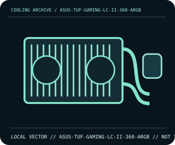

[ INDIVIDUAL COMPONENT // COOLING ]
ASUS TUF Gaming LC II 360 ARGB
360 mm AIO with three 120 mm PWM fans and addressable lighting.

IDENTIFICATION: Confirm the complete model, revision, included mounting hardware, and host requirements against the manufacturer documentation before installation.
Manufacturer specifications
| Catalog subcategory | All-in-one liquid coolers |
|---|---|
| Exact model | ASUS TUF Gaming LC II 360 ARGB |
| Radiator | Aluminium 360 mm radiator, 397 × 120 × 27 mm. |
| Fans | Three 120 mm fans; 800–2000 rpm ±10%, up to 67 CFM each per ASUS specifications. |
| Connections | Pump power/control, PWM fan leads, and 5 V addressable RGB lighting; consult the revision-specific wiring diagram. |
| Socket and fit | Intel LGA1700/LGA1200/LGA115x and AMD AM5/AM4 mounting support; verify exact kit and fit a 397 mm radiator with three 120 mm fans. |
Compatibility and installation
Check motherboard header labels before wiring: the lighting lead is 5 V addressable RGB, not 12 V analog RGB. Confirm radiator clearance at the chosen case position, route tubes without kinks, and verify pump and fan RPM readings after installation.
- Disconnect system power before installation or rewiring, and follow the exact model manual.
- After assembly, confirm fan/pump operation and monitor temperatures before sustained workload.
Manufacturer source
- ASUS — TUF Gaming LC II 360 ARGB product page and technical specificationsManufacturer product documentation; check the current model revision, package contents, and local socket kit before purchase or installation.
This static catalog entry is an identification aid, not a compatibility guarantee; fit and ratings can vary by revision, mounting kit, and host configuration.